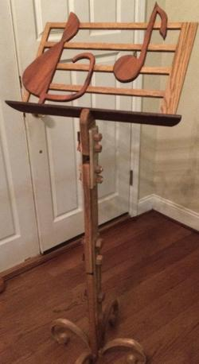
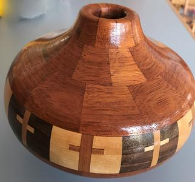
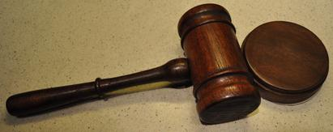
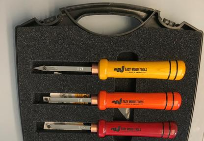
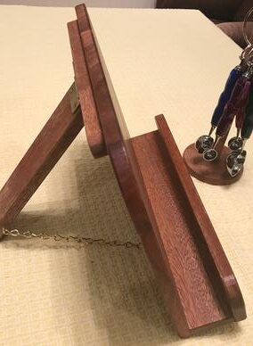
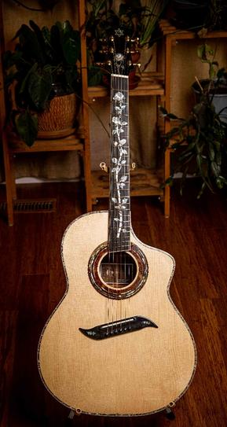

Member Gallery

Music stand
Arthur is a musician and he wanted a nice music stand. He made a few extra stands as special gifts for close friends and relatives. The wood is red oak and maple with hand-made wooden nuts & bolts. The design is Arthur’s.

Segmented bowl
This segmented bowl is Cecil’s 2nd attempt at making a segmented turning. Brazilian Cherry was used for the upper and lower rings. The feature ring is Ash, Black Walnut and one other unknown wood. The feature ring was Cecil’s first attempt at inserting crosses. Finish is 3 coats of wipe on polyurethane.

Gavel
The gavel was made for a friend’s granddaughter. Head is Brazilian Cherry and the handle and sound block is made from Walnut. Easy Wood Tools were used for most of the turning. Once assembled, it was sprayed with two coats of Shellac, and then two coats of satin acrylic spray.

Wood turning set
This 3-Piece Carbide Micro Turning Set from Easy Wood Tools was a delightful way to blow $239.99 on amazon.com. Cecil is especially eager to use the Ci7 Detailer with the sharper pointed cutter.

Cookbook stand
This cook book stand & measuring spoons items were made as a prize for the Santa Teresa crab night raffle. A cookbook stand made from Brazilian cherry and some reclaimed pallet wood. Also, four measuring spoons with acrylic turn handles — plus a cookbook and a stand for the measuring spoons. The acrylic handles were turned using Easy Wood Tools rougher and detailer, both with a negative rake carbide cutting head.

Guitar
Jon’s hand-made guitar, a year in the making.